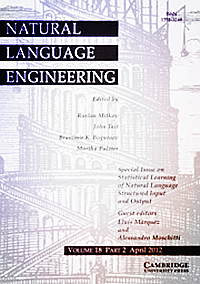

|
 [Natural Language Engineering]
[Flag of the United Kingdom] |
Debut Journal ArticleSCESS: A WFSA-based Automated Simplified Chinese Essay Scoring System with Incremental Latent Semantic Analysis (2014)Appeared in: Natural Language Engineering. As you see in the paper, this paper was submitted one year ago before it was officially accepted. My supervisor Prof. Yanyan Xu and I revised this paper for totally five times. It is not surprising, though, because I think journal requires higher quality and more comprehensive description. But since this is the first time I wrote a journal article, the workload suprised me indeed. In this work, we constructed an initial system for automated Chinese essay scoring called SCESS. This system can grade essays in a relatively complete manner: from text pre-processing to the grading. The other problem we solve in this paper is the big dataset, so we use Incremental Latent Semantic Analysis to grade essays from content perspective. SCESS is only an initial framework in our project ACES. Our philosophy is to grade essays from many aspects, from word usage to the logical structure of the essays, and give a comprehensive scoring. Apparently, SCESS, presently only process the content perspective. In the future, we will continue developing this system, and integrate other algorithms to make it grade essays in a more comprehensive way. I think this work will be left to other students in AI-Lab to do, because I will graduate in one year. But it is my pleasure to transfer this work to the intelligent teammates in AI-Lab. Finally I have to say that the format of the published paper is so terrible. I really do not like it. Therefore I put the manuscript version of this paper on my website. You can browse the published version on the Cambridge University Press, or you can request one by emailing me.
|